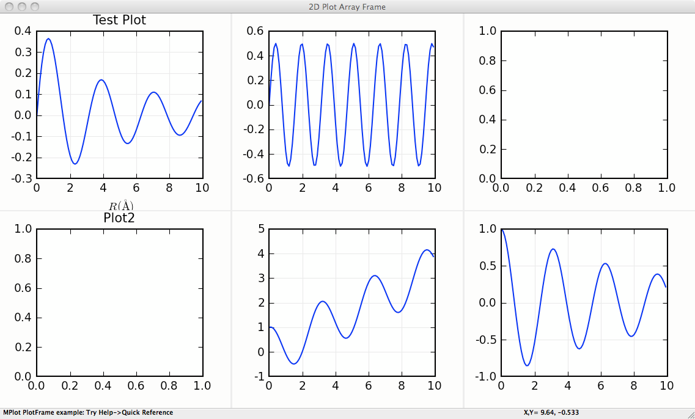
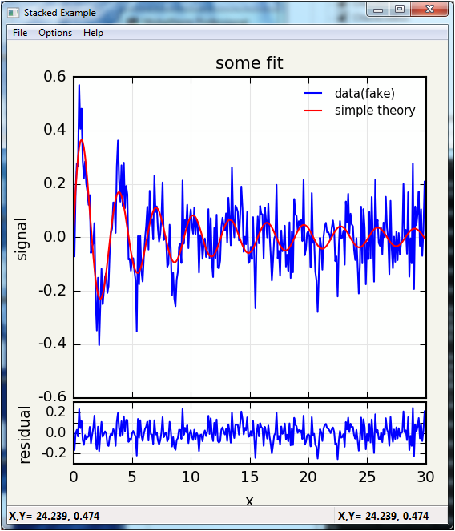
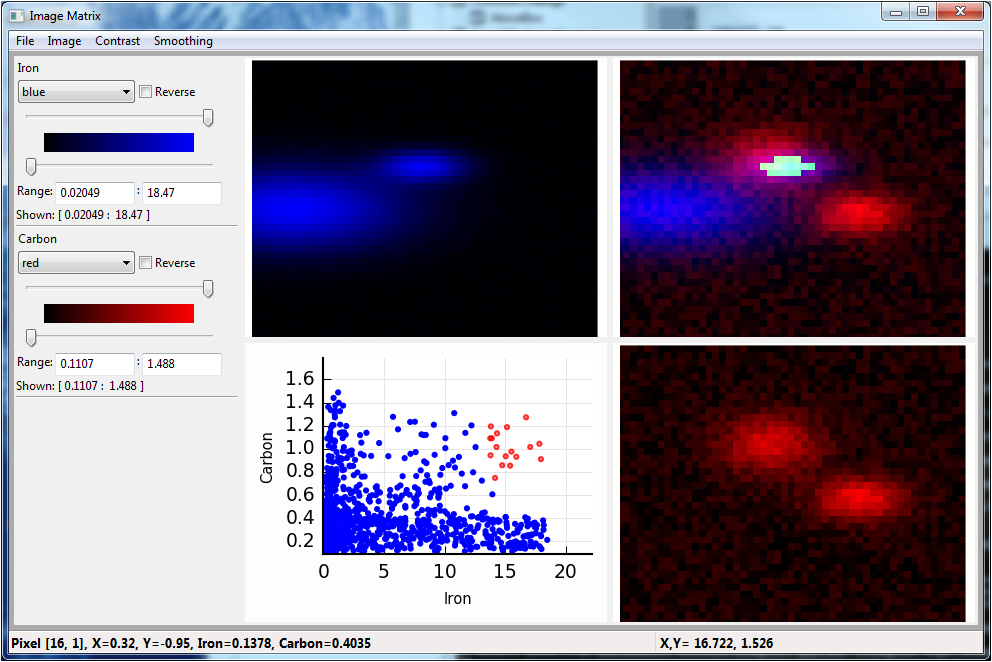

Speciality Displays#
There are a few custom classes for speciality plots included in
wxmplot. Since these build on the PlotPanel and
ImagePanel clases, these are described briefly here and an
example shown for each.
MultiPlotFrame#
- class MultiPlotFrame(
- parent,
- rows=1,
- cols=1,
- framesize=(600, 350),
- **kws,
A MultiPlotFrame supports a grid of PlotPanel on a single plot frame.
This supports the standard methods from PlotPanel, with each
method taking and additional panel keyword argument that contains a
two-element tuple for the address of that panel in the grid of
PlotPanel . The address starts at (0, 0) for the upper left
plot panel, and counts to left to right and top to bottom.
- MultiPlotFrame.plot(self, x, y, panel=(0, 0), **kws)#
plot to specified panel.
- MultiPlotFrame.oplot(self, x, y, panel=(0, 0), **kws)#
overplot to specified panel.
- MultiPlotFrame.clear(self, panel=(0, 0))#
clear plot in specified panel
- MultiPlotFrame.configure(self, panel=(0, 0))#
configure plot in specified panel
Many more methods are supported – essentially all of those for PlotFrame.
MultiPlotFrame Example#
#!/usr/bin/python
#
# simple example of MPlot
import wx
import wxmplot
import numpy
x = numpy.linspace(0.0, 10.0, 201)
y1 = numpy.sin(3*x)/(x+2)
y2 = numpy.cos(2*x)*numpy.sin(2*x)
y3 = numpy.cos(2*x) + x/3
y4 = numpy.cos(2*x)*numpy.exp(-x/10.)
y5 = y4 + y2
y6 = 10*y1 + y3
app = wx.App()
pframe = wxmplot.MultiPlotFrame(rows=2, cols=3, panelsize=(350, 275))
pframe.plot(x, y1, panel=(0, 0), labelfontsize=6)
pframe.plot(x, y2, panel=(0, 1), color='red', labelfontsize=6)
pframe.plot(x, y3, panel=(0, 2), color='black', labelfontsize=5)
pframe.plot(x, y4, panel=(1, 0), fullbox=False)
pframe.plot(x, y5, panel=(1, 1), show_grid=False)
pframe.plot(x, y6, panel=(1, 2))
pframe.set_title('Test Plot', panel=(0, 0))
pframe.set_title('Plot2',panel=(1,0))
pframe.set_xlabel(r' $ R (\AA) $ ')
pframe.Show()
pframe.Raise()
app.MainLoop()
This gives a window with a plot that looks like this:
{kind=link}

StackedPlotFrame#
- class StackedPlotFrame(
- parent,
- framesize=(850, 450),
- panelsize=(550, 450),
- ratio=3,
- **kws,
This supports two PlotPanel`s stacked on top of one another,
and sharing an X axis. Since the two plots are meant to share axes,
there is very little space between the plots, so that they share axes
labels. Furthermore, zooming in on either plot panel zooms into the
corresponding X range for both panels. qThe `ratio parameter sets the
ratio of the height of the top panel to the height of the bottom
panel.
StackedPlotFrame supports most of the methods of
PlotFrame, with the specific panel addressed either as
panel=’top’ or panel=’bot’.
- StackedPlotFrame.plot(self, x, y, panel='top', **kws)#
plot to specified panel.
- StackedPlotFrame.oplot(self, x, y, panel='top', **kws)#
overplot to specified panel.
- StackedPlotFrame.clear(self, panel='top')#
clear plot in specified panel
- StackedPlotFrame.configure(self, panel='top')#
configure plot in specified panel
StackedPlotFrame Example#
#!/usr/bin/python
#
# Stacked Plot shows two related plots stacked top and bottom that are
# expected to share an X axis.
# The upper panel is a standard PlotPanel. The bottom panel is compressed
# in height, and follows the X-range when zooming the top panel, and does
# not respond to most other mouse events.
import wx
import numpy
from wxmplot import StackedPlotFrame
x = numpy.arange(0.0, 30.0, 0.1)
noise = numpy.random.normal(size=len(x), scale=0.096)
y1 = numpy.sin(2*x)/(x+2)
y2 = y1 + noise
app = wx.App()
pframe = StackedPlotFrame(title='Stacked Example', ratio=3.000)
pframe.plot(x, y2, label='data(fake)', ylabel='signal', xlabel='x', title='some fit')
pframe.oplot(x, y1, label='simple theory', show_legend=True)
pframe.plot(x, noise, panel='bottom', label='residual', ylabel='residual')
pframe.Show()
pframe.Raise()
app.MainLoop()
This gives a window with a plot that looks like this:
{kind=link}

ImageMatrixFrame#
- class ImageMatrixFrame(parent, size=(900, 600), **kws)#
An ImageMatrixFrame supports the simultaneous display of 2
related images, such as 2-dimensional data taken at different
wavelengths or at different sampling times. The display is presented
as a 2 x 2 grid, with the individual images displayed along the
diagonal (upper left to lower right). These can be shown in any of
the simple color schemes of (red, green, blue, magenta, cyan, or
yellow), with user-controllable levels.
The upper right panel shows the superposition of the two individual images. The lower left panel shows the simple scatter plot of the intensities of each image for every pixel in the image, illustrating the correlation between the two images.
The user can zoom in on any of the images, and the other panels will follow that zoom level. Using the scatter plot, the user can draw a lasso around any of the pixels. These will then be highlighted on the superposition image in the upper right panel.
- display(
- map1,
- map2,
- title=None,
- name1='Map1',
- name2='Map2',
- xlabel='x',
- ylabel='y',
- x=None,
- y=None,
display two images or maps on the ImageMatrixFrame
ImageMatrixFrame Example#
"""
example showing 2 maps
"""
import wx
from numpy import exp, random, arange, outer, array, linspace
from wxmplot import ImageMatrixFrame
def gauss2d(x, y, x0, y0, sx, sy):
return outer( exp( -(((y-y0)/float(sy))**2)/2),
exp( -(((x-x0)/float(sx))**2)/2) )
if __name__ == '__main__':
app = wx.App()
frame = ImageMatrixFrame()
ny, nx = 41, 51
x = linspace(0, 1, nx)
y = linspace(-1, 1, ny)
ox = x / 10.0
oy = -1 + y / 20.0
map1 = 0.5 * random.random(size=nx*ny).reshape(ny, nx)
map1 += 0.02 + (16.0*gauss2d(x, y, .50, .25, .09, .08) +
18.0*gauss2d(x, y, .12, -.06, .23, .21))
map2 = 0.3 * random.random(size=nx*ny).reshape(ny, nx)
map2 += 0.11 + (1.0*gauss2d(x, y, .44, .3, .1, .15) +
1.2*gauss2d(x, y, .7, -0.1, .09, .11))
frame.display(map1, map2, x=x, y=y, name1='Iron', name2='Carbon',
xlabel='X', ylabel='Y')
frame.Show()
app.MainLoop()
This gives a window with a plot that looks like this:
{kind=link}
